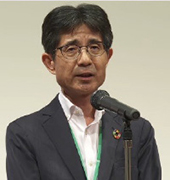
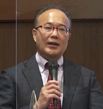
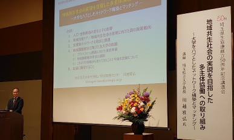

埼玉県補助事業 埼玉県生協連創立50周年記念講演会を開催しました
6月23日（木）14時より、ロイヤルパインズホテル浦和ロイヤルクラウンCにて、埼玉県生協連創立50周年記念講演会を開催し、75人（会場49人、YouTube視聴26人）が参加しました。多主体協働の取り組みをテーマとして、生協役職員・組合員のみならず、関係する団体のみなさんにも広くご案内し、さまざまな地域の課題解決に向けて、ご一緒に考える場としました。

吉川会長理事あいさつ
会員生協および埼玉県生協連も参加している地域包括ケア推進セミナー・ネットワーク会 議を主催されている、埼玉県立大学大学院保健医療福祉学研究科 研究開発センター教授 川越雅弘さんに、「地域共生社会の実現を目指した多主体協働への取り組み ～大学をハブとしたネットワーク構築とマッチング～」と題してご講演いただきました。
はじめに、吉川尚彦会長理事より、この間埼玉県立大学の多主体協働をテーマにしたセミナーに参加するなかで、地域には、法や制度の隙間からこぼれ落ちるいろんな課題があり、その課題を解決するために、連携して対応しているさまざまな団体があることを知り、急速な高齢化と、想定を超える少子化が進んでいる埼玉県において、助け合いの組織である生協として、どういうお役立ちができるのか、何をしなければならないか、皆さんと学び、考えあえる場にしたいとあいさつしました。

埼玉県立大学教授川越雅弘さん
講師の川越雅弘さんからは、
1．人口・世帯構造の変化とその影響、
2．地域包括ケア/地域共生社会の実現に向けた国の施策動向、
3．支援者ネットワークの現状と課題、
4．地域課題解決に向けた埼玉県立大学の取り組み（プラットフォーム構築に向けた事前準備、地域課題解決手法の展開、これまでの活動から見えてきたことと今後の活動について）、
5．生協に期待することについて、ご講演いただきました。
ご講演の中で、令和2年度の厚生労働白書の令和時代の社会保障と働き方を考える（概要）では、自助・互助的対応の対応の類型の中に生協の福祉活動が位置づけられていること、地域課題解決のためには現状やニーズの把握が始まりであること、支援者や企業等の活動状況や機能・資源を把握しリスト化することでマッチングやコラボが生まれていることも話されました。最後に、高齢化社会に向けて、医療・介護・生活支援の各部門を有し、事業と組合員活動がある生協の強みと、地域課題を組織の中だけで考えるのではなく、地域の人と共有して、解決に向けたシナリオを一緒に検討し進めていく、まさに多主体協働の取り組みを生協として推進してほしいと結ばれました。
記念講演会は大久保美紀常務理事が閉会あいさつを行い、終了しました。
